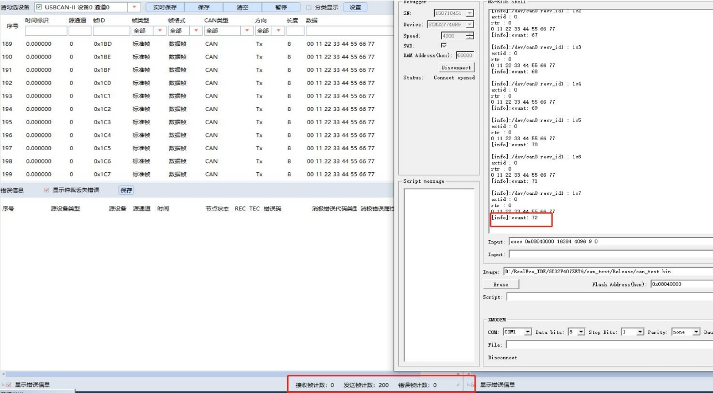
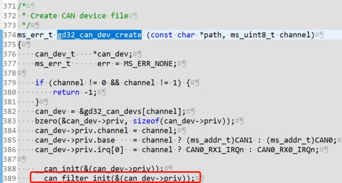
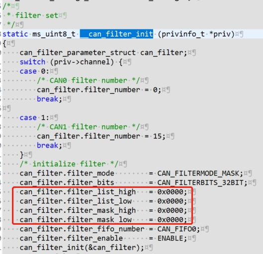

GD32F407 MS-RTOS适配总结
2023-03-09 • MS-RTOS -驱动- bsp • CCAN GPIOADC •前言
这是我第一次接触MS-RTOS这个适用于ARM和C-sky架构由翼辉信息全新设计的一款面向未来物联网和智能设备需求的新一代小型智能物联网操作系统。
本篇文章对于在项目中基于GD32F407ZET6适配MS-RTOS遇到的问题进行汇总记录。
can 总线丢帧问题
在客户板卡上有俩路can，在测试过程中发现不同波特率下均有丢帧的现象

调试查看测试结果后，发现不同波特率下丢弃的帧，帧ID为固定的值。故怀疑问题出在驱动代码
在 MS-RTOS 创建 CAN 设备的函数 gd32_can_dev_create 里发现了对于 CAN 和 CAN 滤波器的配置代码，对照手册后发现，问题出在函数__can_filter_init

在函数__can_filter_init中，对于 CAN 滤波器的掩码模式和列表模式的过滤器数据寄存器值配置有误，应均设置为0

修改后测试，CAN 通信再无丢帧现象发生
以内核模块装载的方式，创建 RTC 设备以及驱动安装。
/*********************************************************************************************************
至此完成 RTC 设备 DS3231 驱动开发。
原创内容使用 知识共享 署名-非商业性使用-相同方式共享 4.0 (CC BY-NC-ND 4.0) 协议授权。